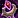
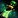
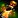
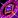

This guide is here to help you navigate the different Enchanting specializations in War Within, so you can make the most out of Enchanting.
War Within introduces four new Enchanting specializations, unlocked at levels 25, 50, 60, and 75. Each one offers unique perks that can significantly impact how you approach Enchanting.
I'll break down each specialization, show you the best ways to spend your points, and highlight which paths might not be worth your time. By the end, you'll have a few example builds to jumpstart your own talent choices. If you're playing Midnight, check out the Midnight Enchanting Specialization Guide instead.
#Supplementary Shattering
The 
Upon unlocking the specialization, you'll gain access to the Shatter Essence ability. This buff boosts your Ingenuity, Multicraft, and Resourcefulness for 15 minutes, but the benefits are directly tied to how many points you've invested in the Shatter Essence specializations. Without investing points, this recipe won't have any effect.
Investing points into the center node will give you more more Ingenuity, Multicraft, and Resourcefulness, and your Ingenuity will refund additional Concentration, with a 100% refund when fully maxed out.
Sub-specialization
Each sub-specialization is straightforward, you get even more Ingenuity, Multicraft, or Resourcefulness.
#Designated Disenchanter
One major change in War Within is that enchanting materials now come with quality levels, similar to Herbs and Ores. The Designated Disenchanter specialization is exactly what it sounds like, a focus on disenchanting to get higher quality enchanting materials.
This specialization will help you get a lot more Q3 enchanting materials.
The three sub-specializations are centered around different armor rarities: Uncommon, Rare, and Epic.
#Everlasting Enchantments
This is the specialization where you will find all the new War Within enchants.
There are three main enchant categories: Earthen Enhancements, Arathor Alterations, and Nerubian Novelties. It can be a bit tricky to navigate the profession UI since enchants are sorted by slot type rather than category. To make it easier, I've put together a table below to help you decide which specialization to focus on.
The lower level enchants are not on this list because you basically don't need anyting special to get them to max quality, they require very low skill.
Earthen Enhancements
| Enchant | Description | Slot | Recipe Source |
|---|---|---|---|
| Intellect and mana pool | Chest | Vendor: Auditor Balwurz Cost: 150x |
|
| Primary Stat | Chest | Everlasting Enchantments - Bolstered Breastplates | |
| Strength and Stamina | Chest | Drop: Awakening the Machine | |
| Haste proc (12sec) | Chest | Trainer | |
| Deftness | Profession Tool | Vendor: Lyrendal Cost: 150x |
|
| Finesse | Profession Tool | Vendor: Lyrendal Cost: 150x |
|
| Ingenuity | Profession Tool | Everlasting Enchantments - Terrific Tools | |
| Perception | Profession Tool | Vendor: Lyrendal Cost: 150x |
|
| Resourcefulness | Profession Tool | Vendor: Lyrendal Cost: 150x |
|
| Critical Strike proc (12 sec) | Weapon | Trainer | |
| Versatility proc (12 sec) | Weapon | Trainer | |
| Mastery proc (12 sec) | Weapon | Trainer | |
| Haste proc (12 sec) | Weapon | Trainer | |
| AoE Lightning damage proc | Weapon | Everlasting Enchantments - Wondrous Weapons |
Arathor Alterations
| Enchant | Description | Slot | Recipe Source |
|---|---|---|---|
| Speed | Boot | Vendor: Auralia Steelstrike Cost: 150x |
|
| Stamina | Boot | Everlasting Enchantments - Accentuated Accessories | |
| Mount speed | Boot | Vendor: Lyrendal Cost: 150x |
|
| Haste | Ring | Can be looted from the Challenger's Cache in the The Dawnbreaker dungeon. | |
| Versatility | Ring | Can be looted from the Challenger's Cache in the The Dawnbreaker dungeon. | |
| Critical Strike | Ring | Can be looted from the Challenger's Cache in the The Dawnbreaker dungeon. | |
| Mastery | Ring | Can be looted from the Challenger's Cache in the The Dawnbreaker dungeon. | |
| Damage absorb proc | Weapon | Can be looted from the Challenger's Cache in the The Dawnbreaker dungeon. | |
| Extra Healing proc | Weapon | Everlasting Enchantments - Fortified Flames | |
| Extra Damage proc | Weapon | Drops from Prioress Murrpray in Priory of the Sacred Flame dungeon. |
Nerubian Novelties
| Enchant | Description | Slot | Recipe Source |
|---|---|---|---|
| Avoidance | Bracers | Vendor: Iliani Cost: 150x |
|
| Leech | Bracers | Vendor: Iliani Cost: 150x |
|
| Speed | Bracers | Everlasting Enchantments - Tertiary Trivialities | |
| Speed and Hearthstone CD | Cloak | Drop: World Creatures | |
| Leech and Health Regen out of combat | Cloak | Delves: Heavy Trunk | |
| Avoidance and Fall damage | Cloak | Drop: Severed Threads Pact | |
| -Haste +Critical Strike | Ring | Drop: Izo, the Grand Splicer Dungeon: City of Threads |
|
| -Versatility +Haste | Ring | Everlasting Enchantments - Cursed Chants | |
| -Critical Strike +Mastery | Ring | Drop: Izo, the Grand Splicer Dungeon: City of Threads |
|
| -Mastery +Versatility | Ring | Drop: Izo, the Grand Splicer Dungeon: City of Threads |
|
| Periodically inflicts Shadow damage (Proc) | Weapon | Drop: Queen Ansurek Raid: Nerub-ar Palace |
#Ephemerals, Enrichments, and Equipment
This specialization focuses on temporary illusions, equipment, reagents, and mana oils. Below is a complete list of items you can focus on within this specialization.
Mana Oils
- Algari Mana Oil - Crit Haste

Oil of Deep Toxins - Nature Damage
Oil of Beledar's Grace - Healing
Equipment
 Runed Ironclaw Rod - Enchanting Profession Tool
Runed Ironclaw Rod - Enchanting Profession Tool- Runed Null Stone Rod - Enchanting Profession Tool
- Scepter of Radiant Magics - Wand
Temporary illusions
Gleeful Glamours are consumable items that transform you into another race, such as the  Gleeful Glamour - Worgen, which changes you into a Worgen. There is a lot of these, one for each race.
Gleeful Glamour - Worgen, which changes you into a Worgen. There is a lot of these, one for each race.
The 4 shoulder illusions also fit into this category:  Illusory Adornment: Runes,
Illusory Adornment: Runes,  Illusory Adornment: Shadow,
Illusory Adornment: Shadow,  Illusory Adornment: Crystal,
Illusory Adornment: Crystal,  Illusory Adornment: Radiance
Illusory Adornment: Radiance
Finishing Reagents
- Mirror Powder - Multicraft
 Concentration Concentrate - Less Concentration
Concentration Concentrate - Less Concentration
Choosing a Specialization Build
Below are some builds tailored to common playstyles. Pick one that fits your playstyle the most then feel free to adjust it to better fit your preferences.
The numbers below aren't a ranking of how good each build is; they're just there to help you navigate the guide more easily.
1. Designated Disenchanter
This is the simplest enchanting build, and it's pretty straightforward. The focus of this build is getting higher quality items from Disenchanting. It's perfect for players who keep enchanting as a side profession for some easy, passive income.
2. Crafting High Quality Enchants
If your goal is to produce and sell large quantities of Enchants at the Auction House, or if you just want to craft high-quality enchants for yourself or your alts, then this build is perfect for you.
3. Selling temporary illusions, reagents, equipment and mana oils
This build is ideal for players looking to sell items on the Auction House but who prefer to focus on a less competitive market. These items tend to have lower demand than enchants, making this a bit riskier. I'd recommend this build to more experienced players. If you're new to making gold, it's probably safer to stick to crafting enchants.
You might also choose this build if you want to craft wands or profession equipment for others through the Personal Crafting Order system.
Build 1. Designated Disenchanter
If you're focusing on Disenchanting, your choice of sub-specialization should align with the types of content you frequently engage in. If you seldom encounter content that yields epic items, it's wise not to focus on that category initially. Instead, invest your points into Uncommon Utilitarian and Rare Resourcing first. However, if you're primarily running Mythic Plus dungeons where most loot is epic, then putting your points into Epic Escalations would be more beneficial.
Start by putting 10 points into  Designated Disenchanter. After that, max out the sub-specialization that aligns with what you expect to disenchant the most. For example, if you run a lot of Mythic and Mythic Plus dungeons, I'd definitely recommend focusing on the Epic sub-specialization first.
Designated Disenchanter. After that, max out the sub-specialization that aligns with what you expect to disenchant the most. For example, if you run a lot of Mythic and Mythic Plus dungeons, I'd definitely recommend focusing on the Epic sub-specialization first.
If you engage in a balanced mix of content, you can max out  Designated Disenchanter (30) first, and then start investing points into the sub-specializations.
Designated Disenchanter (30) first, and then start investing points into the sub-specializations.
Build 2. Crafting High Quality Enchants
This build focuses on crafting high-quality enchants. All talents that provide +skill to enchants are within the Everlasting Enchantments specialization, so there's no need to branch out into other trees.
Choosing an Enchant Tree to Focus on
It's tough to say which enchants will be the most profitable, but each of the three sub-specializations can craft at least one best-in-slot enchant for an armor slot, so you can't really go wrong with any of them.
I recommend scrolling back through the guide to check out the table with all the available high-end enchants, then pick the one that appeals to you.
Two Example builds
Below, you can find two example builds, I would recommend the first build for most people. However, if you're a dedicated crafter aiming for best results, the second build might be better for you.
- Focusing on getting More recipes: This build prioritizes unlocking more enchanting recipes first, giving you a broader range of options before honing in on maxing out specific enchants.
- Max Quality Enchant Focus: This build is all about maxing out one enchant tree to achieve the highest quality possible without using Concentration.
Example Build 1: Focusing on getting More recipes
If you're not too concerned about getting guaranteed Q3 recipes early and just want to unlock every available enchanting recipe in this specialization, your build would look like this:
- Everlasting Enchantments (5) - to unlock the sub-specialization.
- Pick any of the 3 sub-specialization, then put 20 points into it.
- Everlasting Enchantments (+10) - Put ten more points into this specialization unlock the sub-specialization at 15.
- Pick any of the 2 sub-specialization, then put 20 points into it.
- Everlasting Enchantments (+15) - Fifteen more points to max out the at 30.
- Pick the last sub-specialization, then put 20 points into it.
You will learn 7 new enchanting recipes for a total of 90 Knowledge points.
Example Build 2: Max Quality Enchant Focus
Let's say you want to focus on Nerubian Bracer enchants. Your build would look like this:
- Everlasting Enchantments (5) - to unlock the sub-specialization.
- Nerubian Novelties (10) - to unlock the two sub-specialization.
- Pick

Tertiary Trivialities. Make sure to read the description carefully so you pick the right one, as the names can be a bit confusing. The description will specify what the sub-spec is for. For example, if it says "Polish your skills surrounding Nerubian Bracer and Cloak formulas," then that's what this sub-spec focuses on. - Tertiary Trivialities (20)
- Nerubian Novelties (+10) - Ten more points to max it out at 20.
- Everlasting Enchantments (+25) - Twenty-five more points to max out the at 30.
Every other tree in the specialization works similarly. You'll need a total of 70 Knowledge points to max out any enchant.
Now, you just need to get the three blue profession tools, level your enchanting to 100, and you're set! You'll be able to craft Nerubian Bracer enchants without relying on Concentration. Just remember, you'll need all Q3 materials to do it.
Spending the Rest of Your Points
At this stage, you can either focus on maxing out each sub-specialization or start investing points into the Supplementary Shattering specialization to further optimize your build.
Keep in mind that enchants don't benefit from the multicraft stat. So, you should focus on Resourcefulness and Ingenuity.
Build 3. Selling illusions, reagents, equipment and mana oils
This build is more of an experiment. As I mentioned earlier, it doesn't have as much potential as focusing on straight Enchanting, but there could still be some gold-making opportunities in these markets as well.
Mana Oils
Among the items you can craft in this specialization, I think Mana Oils have the highest potential. Algari Mana Oil is the best weapon rune for most classes.
Finishing Reagents
These could have some potential. But, if Q3 materials are expensive, a lot of players might opt for Q2 finishing reagents instead.
Temporary Illusions
Gleeful Glamours will definitely be used. I know I'll be buying them and use them on cooldown, that's for sure. The issue here is the low barrier to entry for this market. If you follow my Enchanting leveling guide, you'll see I already recommend putting 15 points into this, so most people will already have these recipes, and it doesn't take many points to max out this specialization.
Equipment
These three pieces of equipment are the only ones you can craft as an enchanter. Wands aren't very popular, and many players will likely skip the blue profession tools in favor of the epic ones since they only cost a bit more. There's limited gold-making potential in this area, but if you decide to focus on crafting equipment, be aware of this.
- Runed Ironclaw Rod - Enchanting Profession Tool
- Runed Null Stone Rod - Enchanting Profession Tool
- Scepter of Radiant Magics - Wand
These items are all Bind on Pickup (BoP), so if you want to craft them for other players, you'll need to use the crafting order system. You'll also need to advertise your services in the trade channel or look for people who are interested in having these items crafted.
Example Build
I'd prioritize maxing out Mana Oils first. After that, move on to Illusions and finally Finishing Reagents.
Crafting Orders
If you want to craft wands or profession equipment for others through the Personal Crafting Order system, then your build is pretty straight forward. I'd probably always max out the the Profession Equipment first and then Wands, so your build would look like this:
- Ephemerals, Enrichments, and Equipment (5)
- Exquisite Equipment (20) to learn both recipes.
- Ephemerals, Enrichments, and Equipment (+25) - Twenty five more points to fully max out the tree at 30.
- Then max out both Professional Production (20) and Combat Crafts (20)
The total knowledge cost to is 90 or 70 if you only want to focus on one item.